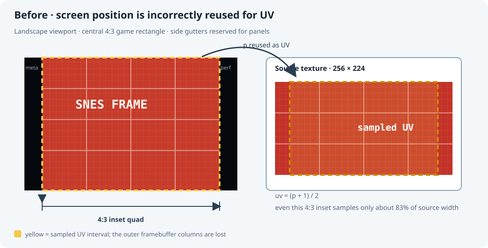
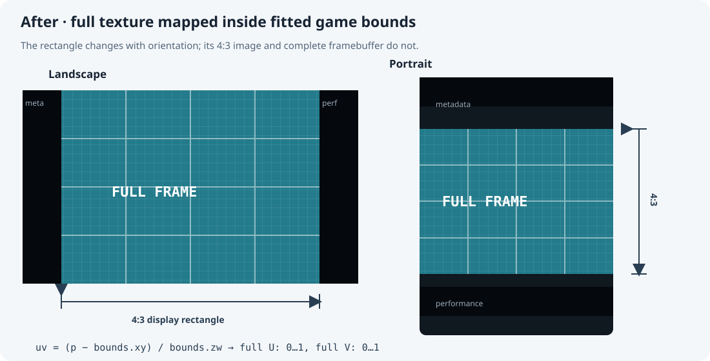
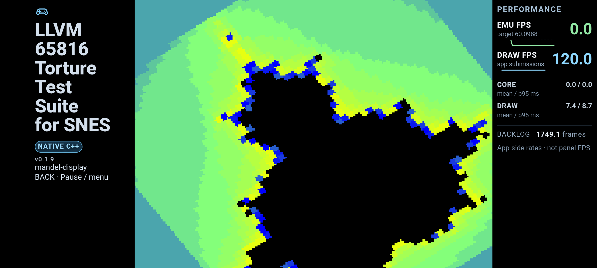
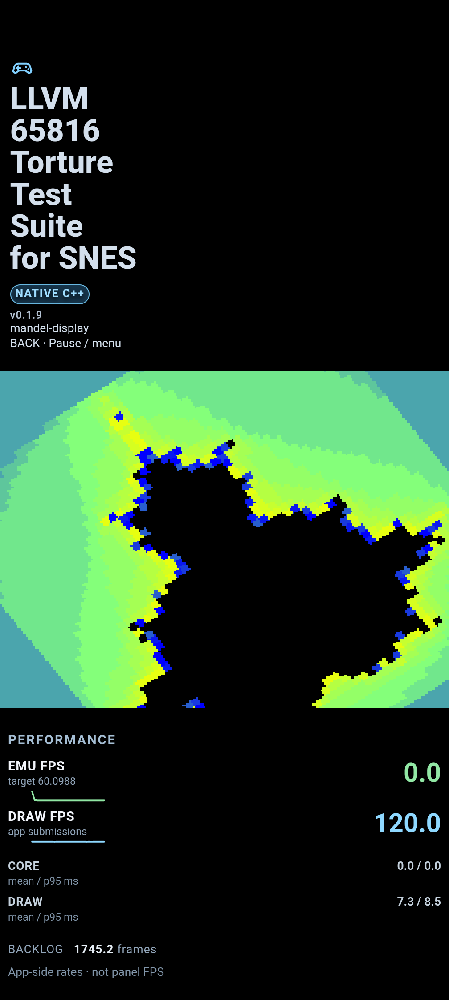
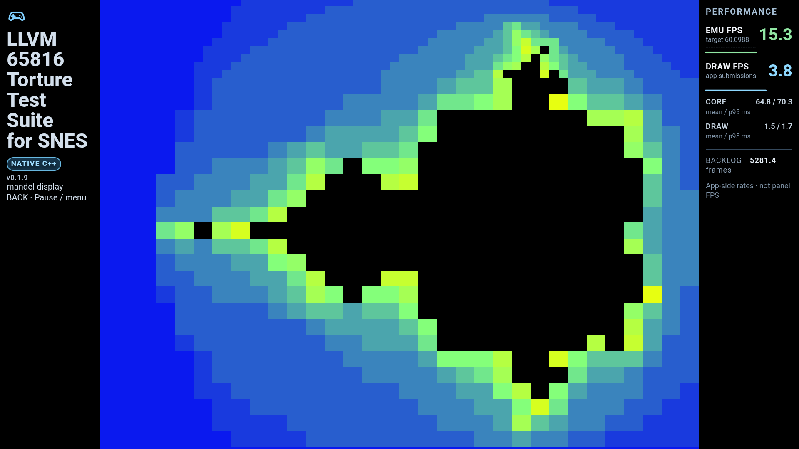
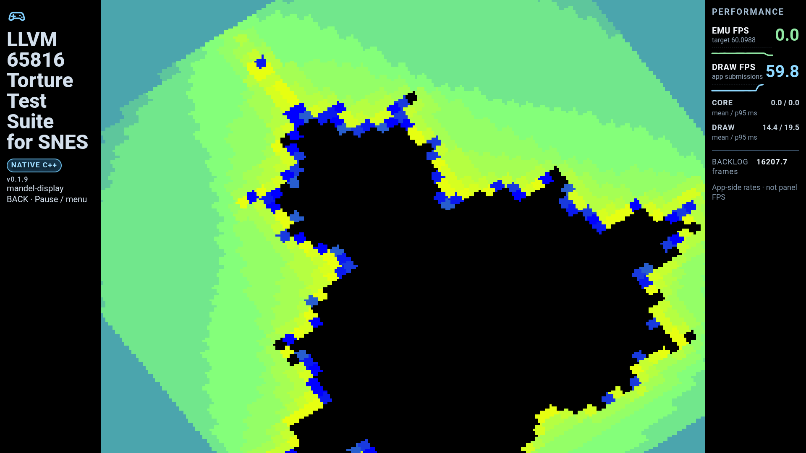

Native SNES renderer: preserve the full framebuffer in responsive layouts
Problem
The responsive layout computes a 4:3 game rectangle and places metadata and performance panels in the remaining device space. The native renderer then uses that rectangle’s clip-space vertex positions for both screen placement and texture coordinates:
gl_Position = vec4(p, 0., 1.);
uv = (p + 1.) * .5;
Here p is already inset to leave the gutters. Therefore uv does not span [0, 1] when the game rectangle does not fill the screen. The renderer samples only part of the 256×224 framebuffer. How much it crops depends on the fitted rectangle, so the visible SNES image changes between device shapes and orientations. The attached landscape example shows the title text cut at both edges.
The problem is in the native texture mapping. The 4:3 layout rectangle and its gutter calculations are still the intended geometry.

Correction
Keep clip-space positions for placing the quad. Pass the game rectangle’s clip-space bounds separately, then normalize each vertex position relative to those bounds:
gl_Position = vec4(p, 0., 1.);
uv = (p - bounds.xy) / bounds.zw;
The native renderer supplies bounds = (left, bottom, right - left, top - bottom). At the game rectangle’s left, right, bottom, and top edges, uv is exactly 0 or 1, independent of the rectangle’s location or size. The fragment shader’s existing vertical flip remains unchanged.

The source framebuffer remains 256×224 samples (8:7 sample grid). The 4:3 game rectangle applies the horizontal expansion used for the traditional SNES television presentation. The fix changes which framebuffer samples are shown; it does not change the requested display aspect ratio.
Implementation status
The bounds-normalized shader is implemented in MainActivity.java. The 31 October coordinator checks recovered the earlier Pixel blocker and verified the corrected native engine on Pixel and Cast1: WRAM 0x204F at frame 5800 and zero differing pixels against the canonical 256×224 reference.
Those checks also found and fixed an independent native color-channel error: the packed 0x00RRGGBB framebuffer had been copied as BGR. Before the correction 38,718 pixels differed; after it both ARM64 and ARMv7 passed. The reference check now runs inside the emulation-step loop, so a multi-step render callback cannot skip frame 5800.
A dedicated native layout benchmark freezes at frame 5800. Pixel portrait job J‑ccf4f03cf386 produced a 1008×756 game rectangle (exactly 4:3); sampling all 57,344 source-pixel centers from the actual hardware screenshot produced zero differences. Landscape job J‑ae4268b0701b also matched all 57,344 source pixels, in a rasterized 1345×1008 rectangle (one pixel of width rounding). Both captures report no OpenGL error and preserve the complete framebuffer. The captures and full job ledger are in the 31 October report. Hardware screenshots, raw logs and downloaded coordinator receipts remain under docs/diagnostics/android-repeat-2026-10-31/.
Validation
- Compare captures at the same deterministic SNES frame in portrait and landscape. The complete 256×224 source must be visible in both; only the rectangle’s position and scale may change.
- Confirm the fitted game rectangle remains 4:3, with no gutter overlap or edge crop.
- Capture on Pixel after coordinator recovery and compare the title screen against the complete source frame.
- Compare native emulation and draw metrics before and after. This adds one
glUniform4fupdate and a few vertex-shader arithmetic operations per draw; it does not add framebuffer copies or fragment work.
Follow-up coverage requested by Will (2026-10-31)
Will confirmed the Android chooser, palette and pause menu work, and selected Cast1 and/or Pixel instead of Cast2/tablet. Cast2 reconnect J‑6dda7aff5728 failed with transport-unavailable; no physical tablet is enrolled. These remain coverage limits, not claims of tested devices.
The new checks used frozen APK SHA-256 a64650acfca10e7b72297218257284aee19974bf993415c72174fff887cd600e. Machine-readable results. The coordinator restored foreground state after each job; the Native app registration was restored to MainActivity afterward.
Pixel landscape: PASS
Job J‑d2fafec54801: all 57,344 source-pixel centers match the canonical frame 5800. The rasterized game rectangle is 1345×1008 (4:3 with one pixel of rounding); GL error is zero. Emulation intentionally freezes at frame 5800, so the screenshot's zero EMU FPS is expected and is not a playback-performance measurement.

Pixel portrait: PASS
Job J‑5300c2716758: all 57,344 source-pixel centers match, game rectangle 1008×756 (exactly 4:3), GL error zero. The owned keep-awake job covered the preparation gap and was cancelled before this test started.

Cast1 initial short run: comparison inconclusive (superseded below)
Job J‑37ef8b2243b5 completed its 120-second check and captured the running demo with no reported GL error. It reached frame 1937 and approximately 15 emulated FPS, not the required frame 5800. This capture is launch/render evidence only; it does not pass the canonical pixel comparison or the 60 FPS pacing target. The longer profile request was rejected before submission by the coordinator's 120-second duration limit. No longer-run pass is claimed. The earlier 31 October correctness receipts above remain separate evidence.

Cast1 checkpoint run: PASS
After the coordinator 0.1.18 update, job J‑980895a9d7bc used the same frozen APK with DURATION=600 CHECKPOINT=frame TARGET=5800. The coordinator detected frame 5800 at 379.561 seconds, ended early, captured evidence, and completed with device health ready, one cleanup attempt and no survivors. The normal MainActivity registration was restored afterward.
The actual 1920×1080 screenshot contains an exact 1440×1080 (4:3) game rectangle. All 57,344 source-pixel centers match, with zero GL error. This closes the substitute Cast1/Pixel correctness and layout coverage. It does not establish 60 FPS emulation: the run still took approximately 6 minutes 20 seconds to emulate 5800 frames. Zero EMU FPS in the screenshot reflects the intentional freeze at the validation point.

Checkpoint observations · Pixel comparison.
Coordinator feedback: longer execution, checkpoint detection, early completion, evidence retrieval and cleanup passed this real-device test. The watch command displayed phases and completion but no intermediate frame counts; progress was visible in downloaded checkpoint.json. The downloaded receipt reported session success and ready health, while checkpoint details were in the separate artifact. The timeout/incomplete path was not tested by this successful run.